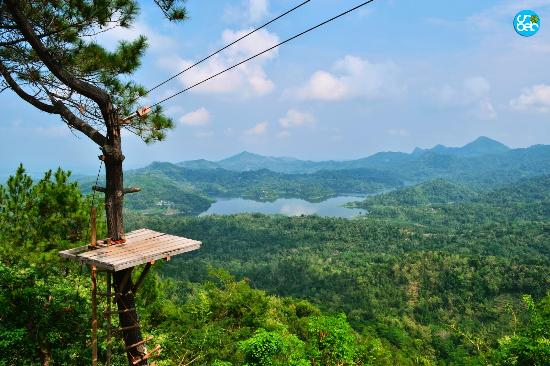

Yogyakarta
Wisata Alam & Pegunungan.
wisata Alam & Pegunungan.

Gunung Merapi
Keindahan alam dan kekuatan alam berpadu di sini. Pengunjung dapat menjelajahi area lava tour dengan jeep, menikmati sunrise di Kaliadem, dan menyaksikan panorama gunung yang megah. Cocok untuk pecinta petualangan yang ingin merasakan sisi liar Yogyakarta.
☀︎⋆࿔:Click for the location

Tebing Breksi
Dulunya tambang batu kapur, kini menjadi destinasi wisata artistik dengan tebing pahatan indah dan pemandangan matahari terbenam yang menakjubkan. Lokasinya dekat Candi Prambanan, membuatnya mudah diakses wisatawan.
☀︎⋆࿔:Click for the location

Pantai Timang
Terkenal dengan gondola kayu yang menantang dan jembatan gantung menuju pulau karang. Ombak besar Samudra Hindia dan suasana alami menjadikannya tempat ideal bagi pencari sensasi dan fotografer.
☀︎⋆࿔:Click for the location

Hutan Pinus Mangunan
Spot populer dengan suasana teduh dan udara sejuk, sering dijadikan lokasi foto prewedding atau piknik santai. Dari gardu pandang, kamu bisa melihat hamparan perbukitan dan Sungai Oyo yang berkelok di bawahnya.
☀︎⋆࿔:Click for the location

Goa Pindul
Nikmati sensasi menyusuri sungai bawah tanah dengan ban karet di dalam gua. Cahaya yang masuk dari celah atap gua menciptakan pemandangan magis dan pengalaman petualangan yang tak terlupakan.
☀︎⋆࿔:Click for the location

☀︎⋆࿔:Click for the location
Kalibiru
Terletak di Kulon Progo, tempat ini menawarkan panorama Waduk Sermo dari ketinggian. Menyediakan spot foto ikonik di atas papan kayu dengan latar alam hijau yang menenangkan.
☀︎⋆࿔:Click for the location